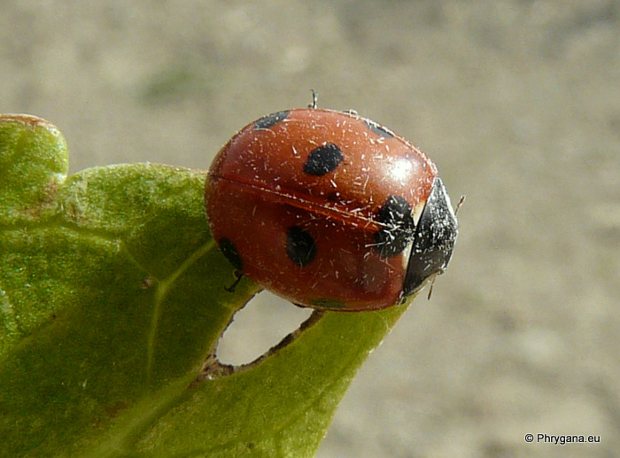
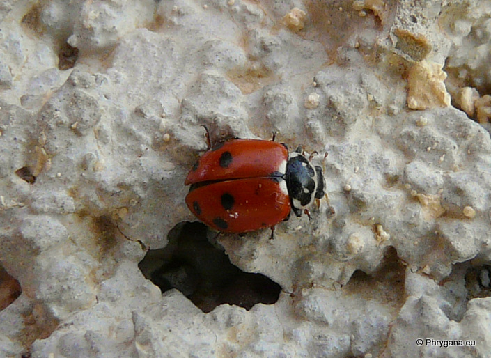
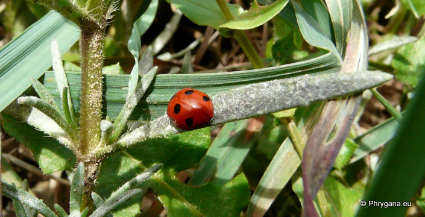

| PHRYGANA | Fauna | Flora | Galles | liste des espèces |
contact -
info - commentaires phrygana1 (at) gmail.com |
| Particularités crétoises | nouveautés | Mines | ressources naturelles |
| Coccinella (Coccinella) septempunctata Linnaeus 1758 |
| 211 | Fauna | COLEOPTERA | COCCINELLIDAE | Coccinellinae | Coccinella Linnaeus 1758 |
|
 Coccinella septempunctata Melambes (Agios Giorgos) 17 février 2010 |
| la Coccinelle à 7 points -- Seven-spot Ladybird |
| Longueur du corps entre 6 et 8 mm. Couleur de fond rouge; 3 taches noires sur chaque elytre et 1 tache circascutellaire noire commune aux deux; 2 taches blanches accolées à la tache commune |
| Ponte: entre 500 et 800 oeufs, jaune paille; éclosion après 1 - 2 (-3) semaines; développement de la larve entre 2 - 3 semaines; durée de la nymphose 8 - 10 jours |
| L'adulte et la larve sont carnassières et s'attaquent principalement aux Aphididae (pucerons). |
| Espèce plurivoltine |
| Période de vol: janvier février mai juin octobre novembre décembre |
| Statut en Crète: indigène -- native |
| Biotopes en Crète: phrygana, olivaies, garrigue, vergers, cultures, parcs. |
| Distribution: Europe, Amérique du Nord, Asie |
| Note: précieux auxilliaire de l'agriculture |
|
 Coccinella septempunctata Melambes (Agios Giorgos) 07 mai 2010 |
|
 Coccinella septempunctata Melambes (Agios Giorgos) 22 février 2010 |
| 17 mai 2012 |
| © paul fontaine -- © Phrygana.eu 2007 -- 2013 |